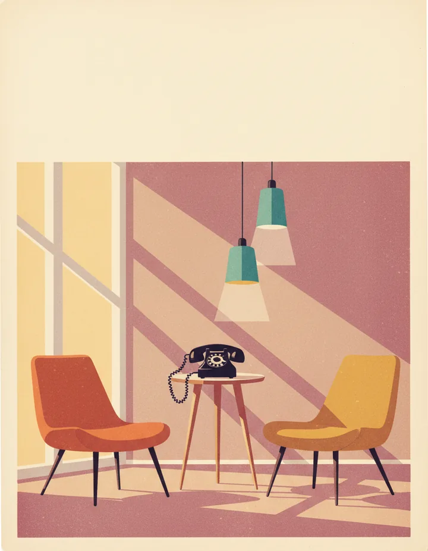
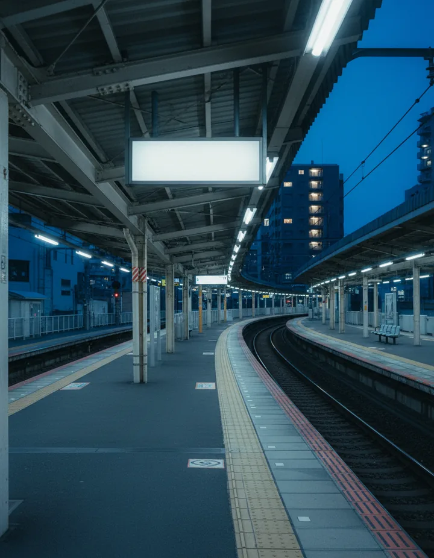
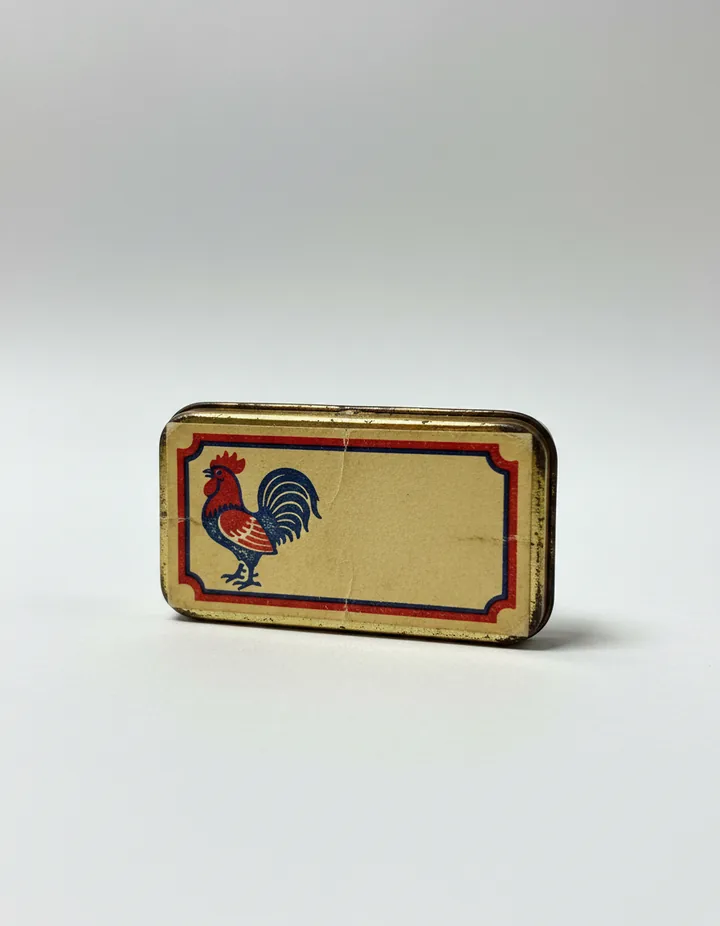

Recreate the Showa dial look with Director's Lookbook
Inspired by a post sharing a new free font.
Kurodenwa Dial is a free font that recreates the numerals on the dial of Japan's Model 600 black rotary telephone. It reads like an industrial DIN sans: capitals and numerals only, one weight, with rounded ends on the strokes. We added it to the Lookbook as a type card, Showa Dial Numerals, and built three looks around it.
0123456789☎ 03-1234-5678 · TEL · ¥ 〒
Image models still garble lettering, and a font's exact shapes are out of their reach. So for each look we asked the Lookbook for a hand, ran its image prompt once with the lettering space left empty, then set the words in the real font as live text on top. Select the text in any frame: it is type, not pixels.
1. 1960s phone company print ad
A magazine ad for an invented telephone company, with the number as the headline.
The hand
- Showa Dial Numerals (Type)
- Mid-Century Editorial Interior (Film)
- Faded 70s Print (Color)
Image prompt
a 1960s magazine advertisement for an invented telephone company, no words or numbers anywhere: a black rotary telephone on a thin-legged side table in a sunlit living room, a wide empty cream band across the top third left blank for the headline. 1950s editorial illustration of an interior, flat colour shapes, no outlines, pendant lamps, thin-legged chairs, teal, rust, mustard and cream. graded like a faded 1970s colour print, lifted milky blacks, warm magenta and orange cast, faded cyan, soft low contrast. Aspect ratio 4:5.

2. Tokyo train-platform sign
A platform at blue hour with a lit station sign hanging from the roof.
The hand
- Showa Dial Numerals (Type)
- Ektachrome Slide (Film)
- Blue Hour Cool (Color)
- Blue Hour (Light)
Image prompt
no words or numbers anywhere: an empty Tokyo train platform at dusk, a blank white enamel station sign hanging from the platform roof, facing the camera straight on, left completely empty. Ektachrome E-6 slide film, colour transparency on a lightbox, crisp neutral whites, punchy contrast, fine grain. blue hour after sunset, deep cobalt ambient sky with no direct sun, warm practical lights glowing in windows, soft cool shadows. blue hour colour palette: navy shadows, cobalt and slate blue midtones, pale sky blue highlights, a single warm amber accent from lit windows. Aspect ratio 4:5.

3. Showa-era product label
A small tin of throat lozenges with a letterpress rooster label.
The hand
- Showa Dial Numerals (Type)
- Matchbox Label Print (Film)
- Tabletop Product Light (Light)
Image prompt
no words or numbers anywhere: a close-up of a small Showa-era tin of throat lozenges filling most of the frame on a seamless sweep, its paper label wrapped around the front with one bold rooster emblem on the left and a wide empty cream panel on the right left blank for lettering. matchbox label print, one bold rooster emblem in two flat colours, red and dark blue on yellowed paper, coarse letterpress ink squash, thick decorative border, worn corners, small format, no lettering. tabletop product photograph, object on a seamless paper sweep, large overhead softbox, white bounce cards for crisp edge highlights, black flags defining the contours, soft gradient falloff behind, small contact shadow. Aspect ratio 4:5.

DROPS¥30
Use the font
Kurodenwa Dial by Pronama LLC, SIL OFL 1.1. You can use it and embed it in your work, commercial work included. If you pass the font file on, keep the licence with it; the font may not be sold by itself. Get it from the font's GitHub repo. The copy this page uses is KurodenwaDial-Regular.woff2, with its licence in OFL.txt.
It has Latin capitals, numerals, punctuation and a few phone symbols (☎, ¥, 〒, circled numbers). For Japanese text, pair it with a gothic such as Zen Kaku Gothic New.
Make your own
Type a feeling into the Lookbook, or ask Claude to deal a hand with the Director's Lookbook connector, hold Showa Dial Numerals, then swap any card that does not fit. Leave room in the frame for the words and set them yourself in the real font.